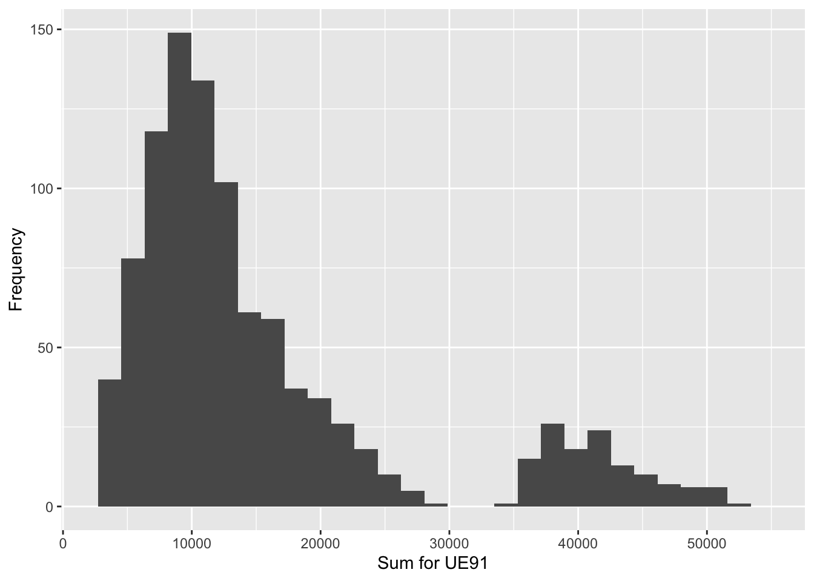
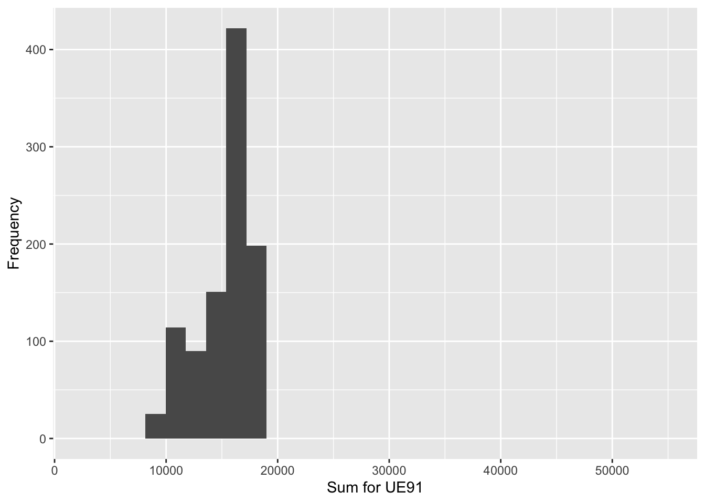
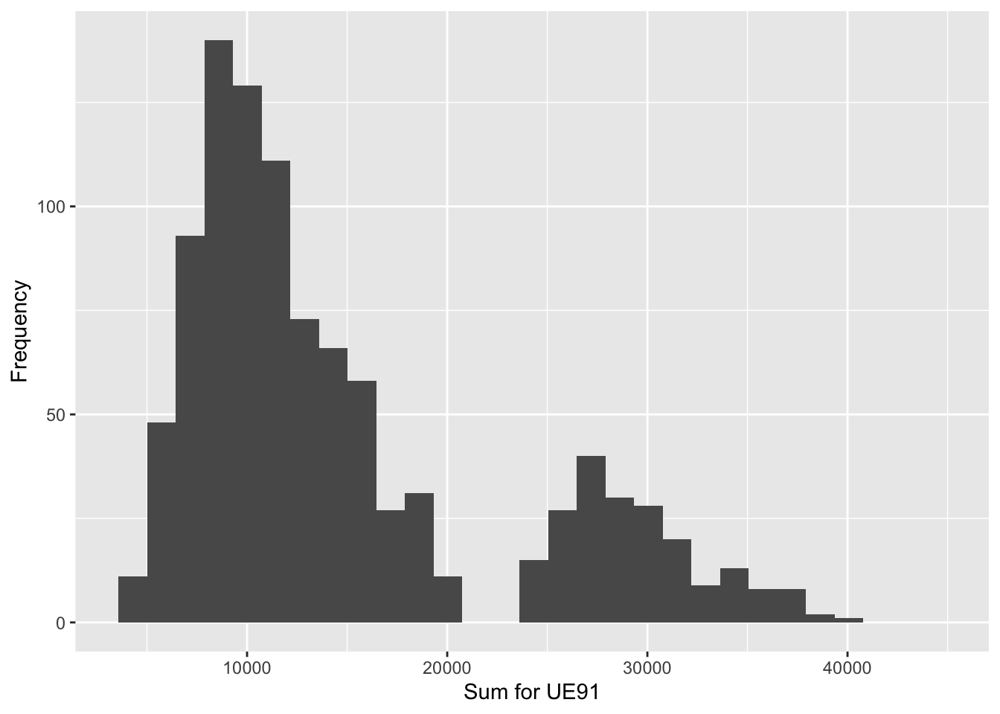

In Chapter 2 of the textbook Practical Methods for Design and Analysis of Complex Surveys, Simple random sampling, systematic sampling and sampling with probability proportional to size are introduced as the basic sampling techniques. The estimation of three different population parameters (population total, ratio and median) is examined. A small fixed population – the Province’91 population - is used throughout to illustrate the estimation methods, where the main focus is on the derivation of appropriate sampling weights under each sampling technique. Special efforts are made in comparing the relative performances of the estimators (in terms of their standard errors) and the available information on the structure of the population is increasingly utilized. The use of such auxiliary information is considered for two purposes: the sampling design and the estimation of parameters for a given sampling design.
In Training Key 28, SRSWOR sampling is demonstrated by first reproducing the results of Example 2.1. Then, the SRSWOR estimation procedure is extended to samples with different sample sizes. Finally, the performance of SRSWOR estimators is examined by using Monte Carlo simulation methods.
In Training Key 45, intra-class correlation is demonstrated under systematic sampling. First, the results of Example 2.4 are reproduced. Then, intra-class correlation is examined for systematic sampling under varying sorting orders of the population.
In Training Key 54, PPS sampling is demonstrated by first reproducing the results of Example 2.6. Then, PPS sampling is examined in more detail by incorporating different types of auxiliary data into the estimation procedure.
Download SAS data | Download SPSS data | Download Excel file | Download text file
install.packages("tidyverse")
library(tidyverse)
province91 <- tribble(
~Stratum, ~Cluster, ~Id, ~Municipality, ~POP91, ~LAB91, ~UE91, ~HOU85, ~URB85,
#-------|---------|----|--------------|-------|-------|------|-------|-------
1, 1, 1, "Jyväskylä", 67200, 33786, 4123, 26881, 1,
1, 2, 2, "Jämsä", 12907, 6016, 666, 4663, 1,
1, 2, 3, "Jämsänkoski", 8118, 3818, 528, 3019, 1,
1, 2, 4, "Keuruu", 12707, 5919, 760, 4896, 1,
1, 3, 5, "Saarijärvi", 10774, 4930, 721, 3730, 1,
1, 5, 6, "Suolahti", 6159, 3022, 457, 2389, 1,
1, 3, 7, "Äänekoski", 11595, 5823, 767, 4264, 1,
2, 5, 8, "Hankasalmi", 6080, 2594, 391, 2179, 0,
2, 6, 9, "Joutsa", 4594, 2069, 194, 1823, 0,
2, 7, 10, "Jyväskmlk", 29349, 13727, 1623, 9230, 0,
2, 4, 11, "Kannonkoski", 1919, 821, 153, 726, 0,
2, 4, 12, "Karstula", 5594, 2521, 341, 1868, 0,
2, 8, 13, "Kinnula", 2324, 927, 129, 675, 0,
2, 8, 14, "Kivijärvi", 1972, 819, 128, 634, 0,
2, 3, 15, "Konginkangas", 1636, 675, 142, 556, 0,
2, 5, 16, "Konnevesi", 3453, 1557, 201, 1215, 0,
2, 1, 17, "Korpilahti", 5181, 2144, 239, 1793, 0,
2, 2, 18, "Kuhmoinen", 3357, 1448, 187, 1463, 0,
2, 4, 19, "Kyyjärvi", 1977, 831, 94, 672, 0,
2, 5, 20, "Laukaa", 16042, 7218, 874, 4952, 0,
2, 6, 21, "Leivonmäki", 1370, 573, 61, 545, 0,
2, 6, 22, "Luhanka", 1153, 522, 54, 435, 0,
2, 7, 23, "Multia", 2375, 1059, 119, 925, 0,
2, 1, 24, "Muurame", 6830, 3024, 296, 1853, 0,
2, 7, 25, "Petäjävesi", 3800, 1737, 262, 1352, 0,
2, 8, 26, "Pihtipudas", 5654, 2543, 331, 1946, 0,
2, 4, 27, "Pylkönmäki", 1266, 545, 98, 473, 0,
2, 3, 28, "Sumiainen", 1426, 617, 79, 485, 0,
2, 1, 29, "Säynätsalo", 3628, 1615, 166, 1226, 0,
2, 6, 30, "Toivakka", 2499, 1084, 127, 834, 0,
2, 7, 31, "Uurainen", 3004, 1330, 219, 932, 0,
2, 8, 32, "Viitasaari", 8641, 4011, 568, 3119, 0
)
# save the population data for future use
save(province91, file="province91.RData")
# to download the population data use:
load(file="province91.RData")Variables:
| Stratum | Cluster | Id | Municipality | POP91 | LAB91 | UE91 | HOU85 | URB85 |
|---|---|---|---|---|---|---|---|---|
| 1 | 1 | 1 | Jyväskylä | 67200 | 33786 | 4123 | 26881 | 1 |
| 1 | 2 | 2 | Jämsä | 12907 | 6016 | 666 | 4663 | 1 |
| 1 | 2 | 3 | Jämsänkoski | 8118 | 3818 | 528 | 3019 | 1 |
| 1 | 2 | 4 | Keuruu | 12707 | 5919 | 760 | 4896 | 1 |
| 1 | 3 | 5 | Saarijärvi | 10774 | 4930 | 721 | 3730 | 1 |
| 1 | 5 | 6 | Suolahti | 6159 | 3022 | 457 | 2389 | 1 |
| 1 | 3 | 7 | Äänekoski | 11595 | 5823 | 767 | 4264 | 1 |
| 2 | 5 | 8 | Hankasalmi | 6080 | 2594 | 391 | 2179 | 0 |
| 2 | 6 | 9 | Joutsa | 4594 | 2069 | 194 | 1823 | 0 |
| 2 | 7 | 10 | Jyväskmlk | 29349 | 13727 | 1623 | 9230 | 0 |
| 2 | 4 | 11 | Kannonkoski | 1919 | 821 | 153 | 726 | 0 |
| 2 | 4 | 12 | Karstula | 5594 | 2521 | 341 | 1868 | 0 |
| 2 | 8 | 13 | Kinnula | 2324 | 927 | 129 | 675 | 0 |
| 2 | 8 | 14 | Kivijärvi | 1972 | 819 | 128 | 634 | 0 |
| 2 | 3 | 15 | Konginkangas | 1636 | 675 | 142 | 556 | 0 |
| 2 | 5 | 16 | Konnevesi | 3453 | 1557 | 201 | 1215 | 0 |
| 2 | 1 | 17 | Korpilahti | 5181 | 2144 | 239 | 1793 | 0 |
| 2 | 2 | 18 | Kuhmoinen | 3357 | 1448 | 187 | 1463 | 0 |
| 2 | 4 | 19 | Kyyjärvi | 1977 | 831 | 94 | 672 | 0 |
| 2 | 5 | 20 | Laukaa | 16042 | 7218 | 874 | 4952 | 0 |
| 2 | 6 | 21 | Leivonmäki | 1370 | 573 | 61 | 545 | 0 |
| 2 | 6 | 22 | Luhanka | 1153 | 522 | 54 | 435 | 0 |
| 2 | 7 | 23 | Multia | 2375 | 1059 | 119 | 925 | 0 |
| 2 | 1 | 24 | Muurame | 6830 | 3024 | 296 | 1853 | 0 |
| 2 | 7 | 25 | Petäjävesi | 3800 | 1737 | 262 | 1352 | 0 |
| 2 | 8 | 26 | Pihtipudas | 5654 | 2543 | 331 | 1946 | 0 |
| 2 | 4 | 27 | Pylkönmäki | 1266 | 545 | 98 | 473 | 0 |
| 2 | 3 | 28 | Sumiainen | 1426 | 617 | 79 | 485 | 0 |
| 2 | 1 | 29 | Säynätsalo | 3628 | 1615 | 166 | 1226 | 0 |
| 2 | 6 | 30 | Toivakka | 2499 | 1084 | 127 | 834 | 0 |
| 2 | 7 | 31 | Uurainen | 3004 | 1330 | 219 | 932 | 0 |
| 2 | 8 | 32 | Viitasaari | 8641 | 4011 | 568 | 3119 | 0 |
Use dropdown in scatter plot below to toggle between variables.
In this Training Key we use the Province’91 data set as a frame population in analysing an SRSWOR sample. In part A we calculate the SRSWOR estimates for the total of UE91 (number of unemployed in the province) and for the total of LAB91 (number of work force in the province) and their corresponding standard errors from the selected sample where sample size is eight \((n=8)\). In part B, we examine how sample size affects to the SRSWOR estimates and their standard errors by selecting different sample sizes. In part C we simulate SRSWOR samples by using Monte Carlo simulation techniques to examine the behaviour of the SRSWOR estimator. Part D is the option for interactive analysis.
We calculate the SRSWOR (simple random sampling without replacement) total estimates of UE91 and LAB91, the ratio estimate (UE91/LAB91) and their corresponding standard error estimates. We use Province’91 data set as the frame population.
# Create a sample including Jyväskylä, Keuruu, Saarijärvi, Konginkangas, Kuhmoinen, Pihtipudas, Toivakka and Uurainen
Sample <- province91[c(1,4,5,15,18,26,30,31), ]
paste("SRSWOR sample is")## [1] "SRSWOR sample is"Sample## # A tibble: 8 × 9
## Stratum Cluster Id Municipality POP91 LAB91 UE91 HOU85 URB85
## <dbl> <dbl> <dbl> <chr> <dbl> <dbl> <dbl> <dbl> <dbl>
## 1 1 1 1 Jyväskylä 67200 33786 4123 26881 1
## 2 1 2 4 Keuruu 12707 5919 760 4896 1
## 3 1 3 5 Saarijärvi 10774 4930 721 3730 1
## 4 2 3 15 Konginkangas 1636 675 142 556 0
## 5 2 2 18 Kuhmoinen 3357 1448 187 1463 0
## 6 2 8 26 Pihtipudas 5654 2543 331 1946 0
## 7 2 6 30 Toivakka 2499 1084 127 834 0
## 8 2 7 31 Uurainen 3004 1330 219 932 0#
# load package survey (to install package use: install.packages("survey"))
library(survey)
# total=32: fpc = finite population correction: fpc = (1-n/N)
# This column (variable) fpc simply contains the number 32 for every record
Sample$fpc <- 32
# This variable contains the weights
Sample$weights <- 4
# Construct an object called province91.srs.design specifying a simple random sampling design.
# This province91.srs.design object will be used for all subsequent analysis commands:
province91.srs.design <- svydesign(ids = ~1, data = Sample, fpc = ~fpc, weights = ~weights)
paste("Estimates for the total of UE91 and LAB91 under simple random sampling without replacement (SRSWOR)")## [1] "Estimates for the total of UE91 and LAB91 under simple random sampling without replacement (SRSWOR)"# Print the weighted total and standard error of the ue91 variable:
svytotal(~UE91, province91.srs.design)## total SE
## UE91 26440 13282# Print the weighted total and standard error of the ue91 variable:
svytotal(~LAB91, province91.srs.design)## total SE
## LAB91 206860 109763paste("Estimates for the ratio of UE91/LAB91 under simple random sampling without replacement (SRSWOR)")## [1] "Estimates for the ratio of UE91/LAB91 under simple random sampling without replacement (SRSWOR)"svyratio(~UE91, ~LAB91, province91.srs.design)## Ratio estimator: svyratio.survey.design2(~UE91, ~LAB91, province91.srs.design)
## Ratios=
## LAB91
## UE91 0.1278159
## SEs=
## LAB91
## UE91 0.004087265confint(svyratio(~UE91, ~LAB91, province91.srs.design))## 2.5 % 97.5 %
## UE91/LAB91 0.119805 0.1358268Selected SRSWOR sample and the estimates for the total of UE91 and LAB91 and for the ratio UE91/LAB91 are similar to the results viewed in table 2.4 on page 29 in Lehtonen and Pahkinen 2004. Pay attention to the estimates and their standard errors and try to think why SRSWOR may lack any significance for practical purposes according to this case study.
After viewing the results, you can examine the R and SAS codes used to calculate the estimates for the total of UE91 and LAB91 and for the ratio UE91/LAB91. Then, you may move on to next step of Key 28 in which different size SRSWOR samples will be selected to study how the sample size affects to the total estimate and to the ratio estimate.
In this exercise we examine SRSWOR estimation of the total of UE91 (number of unemployed in the province) and LAB91 (size of labour force in the province) and of the ratio UE91/LAB91 by using different size SRSWOR samples. The purpose is to examine how sample size (\(n\)) affects to the total estimate and to the ratio estimate and their corresponding standard errors. We use Province’91 data set as the frame population.
Select the desired sample size from the tab below and view the results.
SRSWOR estimation for the total of UE91 and LAB91 and for the ratio UE91/LAB91 with different sample sizes
Province91 Population, Sample size = 4
# load packages
library(sampling)
library(survey)
# create function to select different size SRSWOR samples with user defined seed number
srs <- function(n, seed){
print("Sample size is")
print(n)
set.seed(seed)
# select a sample
sampleprovince <- srswor(n,32)
# the sample is
(1:32)[sampleprovince==1]
# selected data
srs_sampledata <- getdata(province91, sampleprovince)
print("Selected sample is")
print(srs_sampledata)
srs_sampledata$fpc <- 32
srs_sampledata$weights <- (1/(n/32))
# define design object
province91.srs.design <- svydesign(ids = ~1, data = srs_sampledata, fpc = ~fpc, weights = ~weights)
print("Estimate for the total of UE91 is")
print(svytotal(~UE91, province91.srs.design))
print("Estimate for the total of LAB91 is")
print(svytotal(~LAB91, province91.srs.design))
print("Estimate for the ratio of UE91/LAB91 and confidence interval is")
print(svyratio(~UE91, ~LAB91, province91.srs.design))
print(confint(svyratio(~UE91, ~LAB91, province91.srs.design)))
}
# Function srs(n, seed)
# Give sample size (n) and select your own seed number (seed). Call function srs().
srs(4,123)## [1] "Sample size is"
## [1] 4
## [1] "Selected sample is"
## ID_unit Stratum Cluster Id Municipality POP91 LAB91 UE91 HOU85 URB85
## 1 14 2 8 14 Kivijärvi 1972 819 128 634 0
## 2 15 2 3 15 Konginkangas 1636 675 142 556 0
## 3 19 2 4 19 Kyyjärvi 1977 831 94 672 0
## 4 31 2 7 31 Uurainen 3004 1330 219 932 0
## [1] "Estimate for the total of UE91 is"
## total SE
## UE91 4664 790.67
## [1] "Estimate for the total of LAB91 is"
## total SE
## LAB91 29240 4286.6
## [1] "Estimate for the ratio of UE91/LAB91 and confidence interval is"
## Ratio estimator: svyratio.survey.design2(~UE91, ~LAB91, province91.srs.design)
## Ratios=
## LAB91
## UE91 0.1595075
## SEs=
## LAB91
## UE91 0.01540906
## 2.5 % 97.5 %
## UE91/LAB91 0.1293063 0.1897087SRSWOR estimation for the total of UE91 and LAB91 and for the ratio UE91/LAB91 with different sample sizes
Province91 Population, Sample size = 8
# load packages
library(sampling)
library(survey)
# create function to select different size SRSWOR samples with user defined seed number
srs <- function(n, seed){
print("Sample size is")
print(n)
set.seed(seed)
# select a sample
sampleprovince <- srswor(n,32)
# the sample is
(1:32)[sampleprovince==1]
# selected data
srs_sampledata <- getdata(province91, sampleprovince)
print("Selected sample is")
print(srs_sampledata)
srs_sampledata$fpc <- 32
srs_sampledata$weights <- (1/(n/32))
# define design object
province91.srs.design <- svydesign(ids = ~1, data = srs_sampledata, fpc = ~fpc, weights = ~weights)
print("Estimate for the total of UE91 is")
print(svytotal(~UE91, province91.srs.design))
print("Estimate for the total of LAB91 is")
print(svytotal(~LAB91, province91.srs.design))
print("Estimate for the ratio of UE91/LAB91 and confidence interval is")
print(svyratio(~UE91, ~LAB91, province91.srs.design))
print(confint(svyratio(~UE91, ~LAB91, province91.srs.design)))
}
# Function srs(n, seed)
# Give sample size (n) and select your own seed number (seed). Call function srs().
srs(8,123)## [1] "Sample size is"
## [1] 8
## [1] "Selected sample is"
## ID_unit Stratum Cluster Id Municipality POP91 LAB91 UE91 HOU85 URB85
## 1 3 1 2 3 Jämsänkoski 8118 3818 528 3019 1
## 2 10 2 7 10 Jyväskmlk 29349 13727 1623 9230 0
## 3 14 2 8 14 Kivijärvi 1972 819 128 634 0
## 4 15 2 3 15 Konginkangas 1636 675 142 556 0
## 5 18 2 2 18 Kuhmoinen 3357 1448 187 1463 0
## 6 19 2 4 19 Kyyjärvi 1977 831 94 672 0
## 7 22 2 6 22 Luhanka 1153 522 54 435 0
## 8 31 2 7 31 Uurainen 3004 1330 219 932 0
## [1] "Estimate for the total of UE91 is"
## total SE
## UE91 11900 5155.2
## [1] "Estimate for the total of LAB91 is"
## total SE
## LAB91 92680 44107
## [1] "Estimate for the ratio of UE91/LAB91 and confidence interval is"
## Ratio estimator: svyratio.survey.design2(~UE91, ~LAB91, province91.srs.design)
## Ratios=
## LAB91
## UE91 0.1283988
## SEs=
## LAB91
## UE91 0.006582346
## 2.5 % 97.5 %
## UE91/LAB91 0.1154976 0.1413SRSWOR estimation for the total of UE91 and LAB91 and for the ratio UE91/LAB91 with different sample sizes
Province91 Population, Sample size = 16
# load packages
library(sampling)
library(survey)
# create function to select different size SRSWOR samples with user defined seed number
srs <- function(n, seed){
print("Sample size is")
print(n)
set.seed(seed)
# select a sample
sampleprovince <- srswor(n,32)
# the sample is
(1:32)[sampleprovince==1]
# selected data
srs_sampledata <- getdata(province91, sampleprovince)
print("Selected sample is")
print(srs_sampledata)
srs_sampledata$fpc <- 32
srs_sampledata$weights <- (1/(n/32))
# define design object
province91.srs.design <- svydesign(ids = ~1, data = srs_sampledata, fpc = ~fpc, weights = ~weights)
print("Estimate for the total of UE91 is")
print(svytotal(~UE91, province91.srs.design))
print("Estimate for the total of LAB91 is")
print(svytotal(~LAB91, province91.srs.design))
print("Estimate for the ratio of UE91/LAB91 and confidence interval is")
print(svyratio(~UE91, ~LAB91, province91.srs.design))
print(confint(svyratio(~UE91, ~LAB91, province91.srs.design)))
}
# Function srs(n, seed)
# Give sample size (n) and select your own seed number (seed). Call function srs().
srs(16,123)## [1] "Sample size is"
## [1] 16
## [1] "Selected sample is"
## ID_unit Stratum Cluster Id Municipality POP91 LAB91 UE91 HOU85 URB85
## 1 3 1 2 3 Jämsänkoski 8118 3818 528 3019 1
## 2 5 1 3 5 Saarijärvi 10774 4930 721 3730 1
## 3 9 2 6 9 Joutsa 4594 2069 194 1823 0
## 4 10 2 7 10 Jyväskmlk 29349 13727 1623 9230 0
## 5 11 2 4 11 Kannonkoski 1919 821 153 726 0
## 6 14 2 8 14 Kivijärvi 1972 819 128 634 0
## 7 15 2 3 15 Konginkangas 1636 675 142 556 0
## 8 18 2 2 18 Kuhmoinen 3357 1448 187 1463 0
## 9 19 2 4 19 Kyyjärvi 1977 831 94 672 0
## 10 20 2 5 20 Laukaa 16042 7218 874 4952 0
## 11 22 2 6 22 Luhanka 1153 522 54 435 0
## 12 23 2 7 23 Multia 2375 1059 119 925 0
## 13 28 2 3 28 Sumiainen 1426 617 79 485 0
## 14 29 2 1 29 Säynätsalo 3628 1615 166 1226 0
## 15 30 2 6 30 Toivakka 2499 1084 127 834 0
## 16 31 2 7 31 Uurainen 3004 1330 219 932 0
## [1] "Estimate for the total of UE91 is"
## total SE
## UE91 10816 2366.5
## [1] "Estimate for the total of LAB91 is"
## total SE
## LAB91 85166 19719
## [1] "Estimate for the ratio of UE91/LAB91 and confidence interval is"
## Ratio estimator: svyratio.survey.design2(~UE91, ~LAB91, province91.srs.design)
## Ratios=
## LAB91
## UE91 0.126999
## SEs=
## LAB91
## UE91 0.003543583
## 2.5 % 97.5 %
## UE91/LAB91 0.1200537 0.1339443SRSWOR estimation for the total of UE91 and LAB91 and for the ratio UE91/LAB91 with different sample sizes
Province91 Population, Sample size = 16
# load packages
library(sampling)
library(survey)
# create function to select different size SRSWOR samples with user defined seed number
srs <- function(n, seed){
print("Sample size is")
print(n)
set.seed(seed)
# select a sample
sampleprovince <- srswor(n,32)
# the sample is
(1:32)[sampleprovince==1]
# selected data
srs_sampledata <- getdata(province91, sampleprovince)
print("Selected sample is")
print(srs_sampledata)
srs_sampledata$fpc <- 32
srs_sampledata$weights <- (1/(n/32))
# define design object
province91.srs.design <- svydesign(ids = ~1, data = srs_sampledata, fpc = ~fpc, weights = ~weights)
print("Estimate for the total of UE91 is")
print(svytotal(~UE91, province91.srs.design))
print("Estimate for the total of LAB91 is")
print(svytotal(~LAB91, province91.srs.design))
print("Estimate for the ratio of UE91/LAB91 and confidence interval is")
print(svyratio(~UE91, ~LAB91, province91.srs.design))
print(confint(svyratio(~UE91, ~LAB91, province91.srs.design)))
}
# Function srs(n, seed)
# Give sample size (n) and select your own seed number (seed). Call function srs().
srs(32,123)## [1] "Sample size is"
## [1] 32
## [1] "Selected sample is"
## ID_unit Stratum Cluster Id Municipality POP91 LAB91 UE91 HOU85 URB85
## 1 1 1 1 1 Jyväskylä 67200 33786 4123 26881 1
## 2 2 1 2 2 Jämsä 12907 6016 666 4663 1
## 3 3 1 2 3 Jämsänkoski 8118 3818 528 3019 1
## 4 4 1 2 4 Keuruu 12707 5919 760 4896 1
## 5 5 1 3 5 Saarijärvi 10774 4930 721 3730 1
## 6 6 1 5 6 Suolahti 6159 3022 457 2389 1
## 7 7 1 3 7 Äänekoski 11595 5823 767 4264 1
## 8 8 2 5 8 Hankasalmi 6080 2594 391 2179 0
## 9 9 2 6 9 Joutsa 4594 2069 194 1823 0
## 10 10 2 7 10 Jyväskmlk 29349 13727 1623 9230 0
## 11 11 2 4 11 Kannonkoski 1919 821 153 726 0
## 12 12 2 4 12 Karstula 5594 2521 341 1868 0
## 13 13 2 8 13 Kinnula 2324 927 129 675 0
## 14 14 2 8 14 Kivijärvi 1972 819 128 634 0
## 15 15 2 3 15 Konginkangas 1636 675 142 556 0
## 16 16 2 5 16 Konnevesi 3453 1557 201 1215 0
## 17 17 2 1 17 Korpilahti 5181 2144 239 1793 0
## 18 18 2 2 18 Kuhmoinen 3357 1448 187 1463 0
## 19 19 2 4 19 Kyyjärvi 1977 831 94 672 0
## 20 20 2 5 20 Laukaa 16042 7218 874 4952 0
## 21 21 2 6 21 Leivonmäki 1370 573 61 545 0
## 22 22 2 6 22 Luhanka 1153 522 54 435 0
## 23 23 2 7 23 Multia 2375 1059 119 925 0
## 24 24 2 1 24 Muurame 6830 3024 296 1853 0
## 25 25 2 7 25 Petäjävesi 3800 1737 262 1352 0
## 26 26 2 8 26 Pihtipudas 5654 2543 331 1946 0
## 27 27 2 4 27 Pylkönmäki 1266 545 98 473 0
## 28 28 2 3 28 Sumiainen 1426 617 79 485 0
## 29 29 2 1 29 Säynätsalo 3628 1615 166 1226 0
## 30 30 2 6 30 Toivakka 2499 1084 127 834 0
## 31 31 2 7 31 Uurainen 3004 1330 219 932 0
## 32 32 2 8 32 Viitasaari 8641 4011 568 3119 0
## [1] "Estimate for the total of UE91 is"
## total SE
## UE91 15098 0
## [1] "Estimate for the total of LAB91 is"
## total SE
## LAB91 119325 0
## [1] "Estimate for the ratio of UE91/LAB91 and confidence interval is"
## Ratio estimator: svyratio.survey.design2(~UE91, ~LAB91, province91.srs.design)
## Ratios=
## LAB91
## UE91 0.1265284
## SEs=
## LAB91
## UE91 0
## 2.5 % 97.5 %
## UE91/LAB91 0.1265284 0.1265284Monte Carlo simulations are performed to examine the behavior of the SRSWOR estimator.
Select the desired sample size from the tab below and view the simulation results.
Sample size 4, Simulations 1000
| Population_Total | Mean_of_Estimates | Std_error | Bias |
|---|---|---|---|
| 15098 | 15448.77 | 11228.39 | 350.768 |

Sample size 8, Simulations 1000
| Population_Total | Mean_of_Estimates | Std_error | Bias |
|---|---|---|---|
| 15098 | 15232.58 | 7281.658 | 134.58 |
Sample size 16, Simulations 1000
| Population_Total | Mean_of_Estimates | Std_error | Bias |
|---|---|---|---|
| 15098 | 15252.28 | 4265.515 | 154.276 |
Sample size 24, Simulations 1000
| Population_Total | Mean_of_Estimates | Std_error | Bias |
|---|---|---|---|
| 15098 | 15247.58 | 2368.397 | 149.584 |

In this Training Key we use the Province’91 data set as the frame population in calculating the intra-class correlation coefficient under systematic sampling. The total of the study variable UE91 (number of unemployed in the province) is to be estimated. In Part A, the book example will be worked out. The effect of different sorting orders of the population on the intra-class correlation will be examined in Part B. Part C provides an option for interactive analysis.
We calculate the intra-class correlation coefficient for systematic sampling involving four separate systematic samples of eight elements (see book example 2.4 on page 45). Further instructions will be given once you start.
Start SAS Training Key, NOT COMPLETED: a html file is missing
For the Province’91 population, four separate systematic samples of eight elements \((q=N/n=32/8=4)\) are drawn from the population data set. The total of the study variable UE91 (number of unemployed in the province) is to be estimated.
In systematic sampling, a certain design parameter exists. This parameter, called the intra-class correlation coefficient \(\rho_{int}\), will be included in the design variance \(V_{sys}\) of an estimator of the population total. The magnitude of the intra-class correlation, and consequently its effect on variance estimates, depends partly on whether there is a successive system of ordering of the study variable values in the population frame. The effect of sorting order is examined in Part B of this training key.
To calculate the intra-class correlation, the population variance is decomposed into the variation between the systematic samples and the variation within the systematic samples, as in standard one-way analysis of variance. In ANOVA terms we have \(SST = SSW + SSB\), where \(SST\) represents the total sum of squares, \(SSW\) the within sum of squares and \(SSB\) the between sum of squares. By using the decomposition of the total sum of squares, the intra-class correlation is defined as \(\rho_{int} = 1 - \frac{n}{(n-1)} \times \frac{SSW}{SST}\).
Systematic sampling compared with simple random sampling without replacement is
In this exercise the intra-class correlation is negative (-0.08) which means that given the current sorting order of the population, systematic sampling will be more efficient than simple random sampling without replacement (SRSWOR). Note that the population was pre-sorted first by the variable URB85 (urbanicity) and within each URB85 class, by the variable Municipality for this exercise.
paste("Load frame Population data set Province'91:")## [1] "Load frame Population data set Province'91:"load("province91.Rdata")Create four systematic samples: sample1, …, sample4.
sample1 <- province91[c(1,5,9,13,17,21,25,29), ]
paste("sample1 from population Province'91:"); sample1## [1] "sample1 from population Province'91:"## # A tibble: 8 × 9
## Stratum Cluster Id Municipality POP91 LAB91 UE91 HOU85 URB85
## <dbl> <dbl> <dbl> <chr> <dbl> <dbl> <dbl> <dbl> <dbl>
## 1 1 1 1 Jyväskylä 67200 33786 4123 26881 1
## 2 1 3 5 Saarijärvi 10774 4930 721 3730 1
## 3 2 6 9 Joutsa 4594 2069 194 1823 0
## 4 2 8 13 Kinnula 2324 927 129 675 0
## 5 2 1 17 Korpilahti 5181 2144 239 1793 0
## 6 2 6 21 Leivonmäki 1370 573 61 545 0
## 7 2 7 25 Petäjävesi 3800 1737 262 1352 0
## 8 2 1 29 Säynätsalo 3628 1615 166 1226 0sample2 <- province91[c(2,6,10,14,18,22,26,30), ]
paste("sample2 from population Province'91:"); sample2## [1] "sample2 from population Province'91:"## # A tibble: 8 × 9
## Stratum Cluster Id Municipality POP91 LAB91 UE91 HOU85 URB85
## <dbl> <dbl> <dbl> <chr> <dbl> <dbl> <dbl> <dbl> <dbl>
## 1 1 2 2 Jämsä 12907 6016 666 4663 1
## 2 1 5 6 Suolahti 6159 3022 457 2389 1
## 3 2 7 10 Jyväskmlk 29349 13727 1623 9230 0
## 4 2 8 14 Kivijärvi 1972 819 128 634 0
## 5 2 2 18 Kuhmoinen 3357 1448 187 1463 0
## 6 2 6 22 Luhanka 1153 522 54 435 0
## 7 2 8 26 Pihtipudas 5654 2543 331 1946 0
## 8 2 6 30 Toivakka 2499 1084 127 834 0sample3 <- province91[c(3,7,11,15,19,23,27,31), ]
paste("sample3 from population Province'91:"); sample3## [1] "sample3 from population Province'91:"## # A tibble: 8 × 9
## Stratum Cluster Id Municipality POP91 LAB91 UE91 HOU85 URB85
## <dbl> <dbl> <dbl> <chr> <dbl> <dbl> <dbl> <dbl> <dbl>
## 1 1 2 3 Jämsänkoski 8118 3818 528 3019 1
## 2 1 3 7 Äänekoski 11595 5823 767 4264 1
## 3 2 4 11 Kannonkoski 1919 821 153 726 0
## 4 2 3 15 Konginkangas 1636 675 142 556 0
## 5 2 4 19 Kyyjärvi 1977 831 94 672 0
## 6 2 7 23 Multia 2375 1059 119 925 0
## 7 2 4 27 Pylkönmäki 1266 545 98 473 0
## 8 2 7 31 Uurainen 3004 1330 219 932 0sample4 <- province91[c(4,8,12,16,20,24,28,32), ]
paste("sample4 from population Province'91:"); sample4## [1] "sample4 from population Province'91:"## # A tibble: 8 × 9
## Stratum Cluster Id Municipality POP91 LAB91 UE91 HOU85 URB85
## <dbl> <dbl> <dbl> <chr> <dbl> <dbl> <dbl> <dbl> <dbl>
## 1 1 2 4 Keuruu 12707 5919 760 4896 1
## 2 2 5 8 Hankasalmi 6080 2594 391 2179 0
## 3 2 4 12 Karstula 5594 2521 341 1868 0
## 4 2 5 16 Konnevesi 3453 1557 201 1215 0
## 5 2 5 20 Laukaa 16042 7218 874 4952 0
## 6 2 1 24 Muurame 6830 3024 296 1853 0
## 7 2 3 28 Sumiainen 1426 617 79 485 0
## 8 2 8 32 Viitasaari 8641 4011 568 3119 0# add sample IDs
sample1$sampleID <- 1
sample2$sampleID <- 2
sample3$sampleID <- 3
sample4$sampleID <- 4
# combine data sets
s <- rbind(sample1, sample2, sample3, sample4)
library(samplesize4surveys)
icc <- ICC(y = s$UE91, cl = s$sampleID)
paste("Intra-class correlation is"); icc$ICC## [1] "Intra-class correlation is"## [1] -0.08161488The design effect is calculated by equation (2.24): \(DEFF_{sys}(\hat{t}) = \frac{V_{sys}(\hat{t})}{V_{srs}(\hat{t})} = 1 + (n-1) \times \rho_{int}\).
# Design effect
n <- nrow(sample1)
DEFF <- 1 + (n-1)*icc$ICC
paste("Design effect is"); DEFF## [1] "Design effect is"## [1] 0.4286958In this exercise the design effect is DEFF=0.43 which implies that systematic sampling is very efficient in this case.
Further, we can write the design variance of the total estimator in the form
\(V_{sys}(\hat{t}) = N^2 \times (1 - \frac{n}{N}) \times \frac{S^2}{n} \times [1 + (n-1)\rho_{int}]\)
or alternatively
\(V_{sys}(\hat{t}) = V_{srs}(\hat{t}) \times [1 + (n-1)\rho_{int}]\), as is given in equation (2.23).
This also implies that systematic sampling is more efficient than SRSWOR when rhoint is negative.
We examine the effect of the sorting order of the Province’91 population on intra-class correlation. It will be shown that the sorting order matters: the value of the intra-class correlation coefficient varies much depending on the sorting order. Further instructions will be given once you start.
For the Province’91 population, four separate systematic samples of eight elements \((q=N/n=32/8=4)\) are drawn from the population data set similarly as in Part A. The total of the study variable UE91 (number of unemployed in the province) is to be estimated.
We now examine the effect of the sorting order of the population elements on the intra-class correlation coefficient. In sorting, we use the available auxiliary information on the population. The following sorting orders are developed:
Sorting by the variable URB85 (urbanicity in 1985), used in Part A
Sorting by the variable HOU85 (the number of households in 1985)
Sorting by the variable HOU85 (the number of households in 1985) and permuting
Sorting in random order by using a sequence of generated random numbers.
Sorting the population by one or several auxiliary variables before a systematic sample is drawn is sometimes called “implicit stratification” and is frequently used in practical application of systematic sampling.
E.g. results and code for sorting order d) (Sorting in random order by using a sequence of generated random numbers) is following. Try to change the sort variable (see code chunk below).
load("province91.Rdata")
# add random number for sorting
set.seed(123) # Pick a personal seed number
Random <- runif(nrow(province91), min = 0, max = 1)
province91 <- cbind(province91, Random)
# select variable for sorting (e.g. variable Random) and sort data
province91.sorted <- province91[order(province91$Random),]
# try sorting by URB85 and HOU85 variables:
# province91.sorted <- province91[order(province91$URB85),]
# province91.sorted <- province91[order(province91$HOU85),]
# Create four systematic samples from sorted data
sample1 <- province91.sorted[c(1,5,9,13,17,21,25,29), ]
sample2 <- province91.sorted[c(2,6,10,14,18,22,26,30), ]
sample3 <- province91.sorted[c(3,7,11,15,19,23,27,31), ]
sample4 <- province91.sorted[c(4,8,12,16,20,24,28,32), ]
# HOU85 in descending order + "optimal" permutation:
#sample1 <- filter(province91, Id %in% c(1,19,14,15,21,28,27,22))
#sample2 <- filter(province91, Id %in% c(10,29,16,31,23,30,11,13))
#sample3 <- filter(province91, Id %in% c(20,26,12,24,9,17,18,25))
#sample4 <- filter(province91, Id %in% c(4,2,7,5,32,3,6,8))
# add sample IDs
sample1$sampleID <- 1
sample2$sampleID <- 2
sample3$sampleID <- 3
sample4$sampleID <- 4
# combine data sets
s <- rbind(sample1, sample2, sample3, sample4)
library(samplesize4surveys)
icc <- ICC(y = s$UE91, cl = s$sampleID)
paste("Intra-class correlation is:")## [1] "Intra-class correlation is:"icc$ICC## [1] -0.05633341# Design effect
n <- nrow(sample1)
paste("Design effect is:")## [1] "Design effect is:"(DEFF <- 1 + (n-1)*icc$ICC)## [1] 0.6056661In a), we use the same sorting order as in Part A. Calculated
approximative DEFF=0.426 indicates that the list order of the
municipalities (sorting first by URB85 and then by the name of the
municipality) is interestingly associated with the number of unemployed,
UE91. In b), we use HOU85 as sorting variable. Note that the variable
HOU85 correlates strongly with the study variable UE91. In b), the
population of municipalities is sorted in descending order by HOU85.
Surprisingly, the design effect is DEFF=0.531 which results in less
efficient systematic sampling as in case a. Again in c) we start with
descending order of HOU85 and in addition we introduce an “optimal”
permutation of units within sampling intervals. This results in
DEFF=0.25.
As a reference in d), where we aim at a randomly ordered population with
respect to the study variable UE91, any substantial gain cannot be
expected, as indicated by a design effect close to one and systematic
sampling is almost equally efficient as SRSWOR.
We next illustrate in more detail the effect of the sorting order on the efficiency of systematic sampling. The next table gives the means of the study variable for each sample configuration under the sorting orders. It can be clearly seen that in c) the means are closest to each other and therefore, the intra-cluster correlation is the smallest.
| Systematic samples | a) | b) | c) | d) |
|---|---|---|---|---|
| Sample 1 | 736.88 | 781.75 | 597.38 | 345.88 |
| Sample 2 | 446.63 | 462.13 | 342.13 | 799.63 |
| Sample 3 | 265.00 | 337.38 | 340.50 | 466.88 |
| Sample 4 | 438.75 | 306.00 | 607.25 | 274.88 |
| \(\rho_{int}\) | -0.082 | -0.067 | -0.106 | -0.056 |
| DEFF | 0.426 | 0.531 | 0.255 | 0.606 |
Note that the intra-class correlation coefficient is negative in all example cases which means that given the different sorting orders examined, systematic sampling in these cases is more efficient than simple random sampling without replacement (SRSWOR).
Note also that results in d) depend on the choice of the seed number for the generation of the sequence of random numbers. This is because we now have no control over the composition of the sampling intervals and our population size happens to be small. In this example the seed is 123 and it produces a DEFF 0.606. If a different seed number is chosen, different results will be obtained (see the table below).
The effect of seed number to intra-class correlation and DEFF:
| Seed number | \(\rho_{int}\) | DEFF |
|---|---|---|
| 98765432 | -0.0004478304 | 0.9968652 |
| 654326599 | 0.0509257 | 1.35648 |
| 11111111 | -0.06489158 | 0.545759 |
Please download the SAS code for your own further training. Instructions are given in the SAS code once you download. NOTE! You need to have access to SAS in your computer.
In point A we will show how to perform estimation under systematic PPS sampling (PPSSYS). Point A refers to example 2.6 (page 54). In point B we will demonstrate how the use of auxiliary information affects to the total estimate of UE91 (number of unemployed in the province) and the corresponding variance estimate. This is to get familiar on the selection and use of auxiliary information in PPS sampling. Point C is an option for interactive analysis. We use Province’91 data set as the frame population.
Systematic PPS sample \((n=8)\) is drawn from the Province’91 population such that the number of households (HOU85) is used as the size measure \(z\). PPSSYS estimate and the corresponding standard error estimate are calculated from the selected sample. The results are compared to estimation under SRSWOR sampling.
In Province’91 population the cumulative sum of HOU85 over the population is 91753 and under systematic PPS sampling the sampling interval would be \(q=91753/8=11469\). However, the largest element ‘Jyvaskylä’ has the value 26881 for the variable, which is more than twice the sampling interval. Therefore, the element would be drawn twice and the remaining 6 elements would be drawn from the remaining population elements. In this case, therefore, we first take the largest element ‘Jyväskylä’ with certainty and then draw 7 elements from the remaining population elements by systematic PPS sampling. Such a situation is commonly managed in the way described above.
Please view the R code to examine how the study is performed.
load("province91.Rdata")
Sample.srs <- filter(province91, Id %in% c(1,4,7,10,13,18,26,32))
Sample.pps <- filter(province91, Id %in% c(1,4,7,10,13,18,26,32))
# Add indicator variable for Jyväskylä
Sample.pps$Jystrat <- 1
Sample.pps$Jystrat[Sample.pps$Id %in% c(4,7,10,13,18,26,32)] <- 2
# NOTE: In each strata we need at least two observations. Because Jyväskylä is sampled with certainty, Jyväskylä is entered
# twice in our sample data file and the weight for Jyväskylä is 0.5 per observation line.
jyv <- Sample.pps[1,]
Sample.pps <- rbind(Sample.pps, jyv) # Jyväskylä is now twice in our data
# package survey
library(survey)
# total=32: fpc = finite population correction: fpc = (1-n/N)
# This column (variable) fpc simply contains the number 32 for every record.
Sample.srs$fpc <- 32
Sample.srs$weights <- 4
# Sampling weight calculation for PPS (the cumulative sum of HOU85 over the population is 91753 and the largest element Jyväskylä has the value 26881)
# sum(province91$HOU85)
# sum(province91$HOU85) - 26881
Sample.pps$weights_pps <- (91753-26881)/(Sample.pps$HOU85*7)
Sample.pps$weights_pps[Sample$Id==1] <- 0.5
# define design objects
province91.srs.design <- svydesign(ids = ~1, data = Sample.srs, fpc = ~fpc, weights = ~weights)
province91.pps.design <- svydesign(ids = ~Id, data = Sample.pps, strata = ~Jystrat, weights = ~weights_pps)
t.ue91.srs <- svytotal(~UE91, province91.srs.design)
paste("SRSWOR estimation for the total of UE91 and its' se:")## [1] "SRSWOR estimation for the total of UE91 and its' se:"t.ue91.srs## total SE
## UE91 33952 12976# Note. svytotal doesn't work without some adjustment to options (see more: http://r-survey.r-forge.r-project.org/survey/exmample-lonely.html)
options(survey.lonely.psu = "certainty")
t.ue91.pps <- svytotal(~UE91, province91.pps.design)
paste("PPSSYS estimation for the total of UE91 and its' se:")## [1] "PPSSYS estimation for the total of UE91 and its' se:"t.ue91.pps## total SE
## UE91 15078 521.33We use three different auxiliary variables in PPSWOR sampling. The first auxiliary variable is HOU85 (the number of households in the municipality). The two others are artificial variables x and z. These variables are constructed for pedagogical purposes to demonstrate the role of correlation of the study variable and auxiliary variable, and that a strong correlation alone does not guarantee good efficiency for PPSWOR. Further instructions are given once you start.
Select the desired size measure variable from the tab below and view the simulation results. Size variables that you can select are:
| Population_Total | Mean_of_Estimates | Std_error | Bias |
|---|---|---|---|
| 15098 | 15118.36 | 455.1317 | 20.36347 |
| Population_Total | Mean_of_Estimates | Std_error | Bias |
|---|---|---|---|
| 15098 | 14732.96 | 8192.497 | 365.0374 |

| Population_Total | Mean_of_Estimates | Std_error | Bias |
|---|---|---|---|
| 15098 | 15175.88 | 4296.628 | 77.88458 |
Please download the SAS code for your own further training. Further instructions are given once you download the code.
NOTE! You need to have access to SAS in your computer.